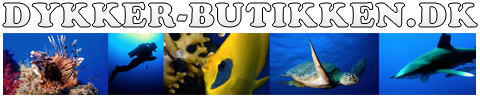

Du har som hovedregel altid brug for enten et spyd eller en harpun. Så kan du hoppe i vandet og jage. Men jeg vil dog helt klart sige man også skal have
De overnævnte er de ting jeg vil anbefale alle at købe når man vil på UV jagt. Det er også en god ide at købe blybælte, bly og blyvest. Bly gør at du nemmere kan dykke undervandet. Det kan nemlig godt være vanskeligt at holder sig under vand med våddragt på da der er meget opdrift i sådan en dragt.
Dykkerbutikken forhandler dykkerudstyr og har også snorkling og undervansjagt produkter. De laver kurser i undervandsjagt i og omkring Århus. De er altid klar på at hjælpe og giver gerne en god pris hvis du gør dig gode venner med de. Pris Du skal gå ud fra at bruge ca. 3000kr til at have et helt men godt og funktionelt sæt hvor alt ud over bly er inkluderet. Bly er meget svært at komme en specifik pris på da det kan svinge meget i pris, men du kan gå i tiger og købe nogle fodvægte med velcro. De holder fint til en del ture i vandet. De koster ca. 40-50 kr og vejer 1 kilo. 